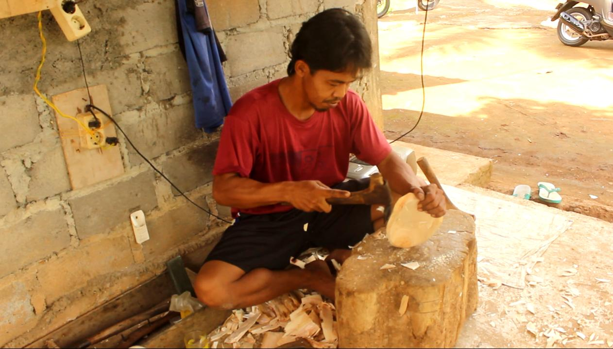

Foto
Foto tentang Desa Wisata Bobung

Kontak
Silahkan hubungi kami jika Anda ingin berkunjung
Bobung, Putat, Patuk, Daerah Istimewa Yogyakarta
Ari Iswanto : 0838-4004-8388
Desa Wisata Bobung terletak di desa Putat, kecamatan Patuk, Kabupaten Gunung Kidul, provinsi Daerah Istimewa Yogyakarta. Letaknya sekitar 10 km menuju arah barat Kota Wonosari atau sekitar 30 km menuju arah timur Kota Yogyakarta. Daerah ini dikenal sebagai sentra kerajinan batik kayu di Yogyakarta."
Desa wisata Bobung sendiri diresmikan oleh Pemkab Gunungkidul pada tahun 2001 menjadi desa kerajinan topeng batik kayu. Kerajinan tangan klasik dan tradisional ini sejalan dengan visi dan misi pemerintah yang akan mendukung penuh bidang ekonomi kreatif dan perhutanan sosial termasuk didalamnya kegiatan dan usaha dalam berkesenian dan budaya yang mengoptimalkan potensi lokal."
Awalnya Kerajinan batik kayu di Bobung berawal dari kebutuhan topeng kayu untuk lakon-lakon dalam seni tari Topeng Panji yang berkembang di dusun ini sejak sekitar 1960. Tarian Panji itu berkembang yang membuat kebutuhan akan topeng juga bertambah. Tari Panji konon diciptakan Sunan Kalijaga sebagai media dakwah. Tarian ini juga masih dipentaskan untuk menghibur pengunjung yang datang. Bentuk topeng sangat khas karena mirip dengan penggambaran tokoh wayang purwa yang matanya tertarik ke atas dengan hidung lancip, motif batik yang mendasari pewarnaan topeng menambah nilai keindahan topeng.
Sejarah pembuatan topeng kayu di sini dimulai dari kebiasaan masyarakat Bobung yang setiap musim panen tiba menggelar pentas seni tari yang konon ciptaan Sunan Kalijaga, yaitu tarian topeng pandji. Alkisah cerita pandji berasal dari kata siji (satu atau pertama) dan mapan sing siji (percaya kepada Yang Satu). Jadi bisa dimaklumi mengapa tari topeng panji gerakannya begitu halus, persis seperti hubungan kita dengan Tuhan yang berlangsung amat pribadi.
Bentuk topeng yang diproduksi juga memiliki kekhasan tersendiri, yaitu mirip tokoh wayang purwa yang matanya tertarik ke atas dan hidung lancip. Tidak lupa juga dengan ukiran dan pewarnaan topeng kayu yang menambah keindahan topeng. Kerajinan batik kayu desa wisata Bobung berkembang tidak hanya berbentuk topeng saja. Berbagai kerajinan batik kayu seperti nampan, gantungan kunci, wayang dan bentuk-bentuk lainnya juga diproduksi disini."
Foto tentang Desa Wisata Bobung
Silahkan hubungi kami jika Anda ingin berkunjung
Bobung, Putat, Patuk, Daerah Istimewa Yogyakarta
Ari Iswanto : 0838-4004-8388